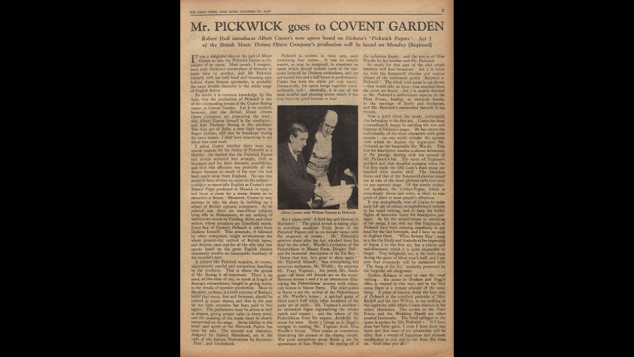

1936

CAST
Samuel Pickwick
-
William Parsons
Nathaniel Winkle
-
Gerald Davies
Alfred Jingle
-
Henry Wendon
Perker
-
James Topping
Sam Weller
-
Dennis Noble
Mr. Wardle
-
Samuel Worthington
Rachel Wardle
-
Enid Cruikshank
Tracy Tupman
-
Francis Russell
Augustus Snodgrass
-
Stanley Pope
Trundle
-
Gordon Brand
Joe, the Fat Boy
-
John Lewis
Emily Wardle
-
Elizabeth French
Isabella Wardle
-
Beryl Thurston
Arabella
-
Margaret Donald
The Old Lady
-
Sarah Fischer
Chorus of Yokels and Serving Girls at Manor Farm
CREATIVE TEAM
Composer
-
Albert Coates
Libretto
-
Albert Coates
Conductor
-
Albert Coates
Chorus Master
-
Norman Feasey
Producer
-
Vladimir Rosing
BACKGROUND
THE BRITISH MUSIC DRAMA OPERA COMPANY
from the Royal Opera House, Covent Garden
Scene I: The Pickwickians at the Manoeuvres
Scene 2 : Manor Farm, Dingley Dell
Scene 3: Jingle's Intrigue (Dingley Dell)
Scene 4: The Inn and Sam Weller